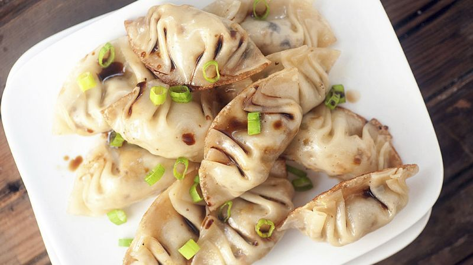

Tteokbokki Sauce
Ingredients:
- 1 cup gochujang (Korean red chili paste)
- 2 tablespoons soy sauce
- 1 tablespoon sugar
- 2 cloves of garlic, minced
- 1 cup water or broth
Instructions:
- In a saucepan, combine the gochujang, soy sauce, sugar, minced garlic, and water or broth. Stir well to combine.
- Bring the sauce to a simmer over medium heat. Let it cook for 5-7 minutes, stirring occasionally, until the sauce thickens slightly.
- Add the rice cakes (tteok) to the sauce and stir to coat them evenly. Cook for an additional 5-10 minutes until the rice cakes are soft and the sauce has thickened to your desired consistency.
- Serve hot, garnished with sliced green onions or sesame seeds if desired.
Bibimbap Sauce
Ingredients:
- 2 tablespoons gochujang (Korean red chili paste)
- 1 tablespoon sesame oil
- 1 tablespoon soy sauce
- 1 teaspoon sugar
- 1 clove of garlic, minced
Instructions:
- In a small bowl, combine the gochujang, sesame oil, soy sauce, sugar, and minced garlic. Mix well until all the ingredients are thoroughly combined.
- Taste the sauce and adjust the seasoning if needed. You can add more gochujang for extra spiciness or more sugar for a sweeter flavor.
- Serve the bibimbap sauce alongside your bibimbap dish, allowing each person to add it to their bowl according to their taste preferences.

Japchae Sauce
Ingredients:
- 2 tablespoons gochujang (Korean red chili paste)
- 1 tablespoon sesame oil
- 1 tablespoon soy sauce
- 1 teaspoon sugar
- 1 clove of garlic, minced
Instructions:
- In a small bowl, combine the gochujang, sesame oil, soy sauce, sugar, and minced garlic. Mix well until all the ingredients are thoroughly combined.
- Taste the sauce and adjust the seasoning if needed. You can add more gochujang for extra spiciness or more sugar for a sweeter flavor.
- Serve the japchae sauce alongside your japchae dish, allowing each person to add it to their bowl according to their taste preferences.
Mandu Dumplings

Mandu Filling
Ingredients:
- 1/2 pound ground pork
- 1/4 cup finely chopped green onions
- 1 tablespoon soy sauce
- 1 tablespoon sesame oil
- 1 teaspoon grated ginger
- 1/2 teaspoon salt
- 1/4 teaspoon white pepper
- 30-40 small dumpling wrappers
Instructions:
- In a bowl, combine the ground pork, chopped green onions, soy sauce, sesame oil, grated ginger, salt, and white pepper. Mix well until all ingredients are thoroughly combined.
- Take a dumpling wrapper and place a small spoonful of the pork filling in the center. Carefully pleat the edges of the wrapper to seal it, creating a small pouch.
- Repeat the process with the remaining wrappers and filling until all dumplings are made.
- Place the dumplings in a steamer basket lined with parchment paper or cabbage leaves to prevent sticking. Steam over boiling water for about 10-12 minutes or until the filling is cooked through.
- Serve the Xiaolongbao hot with a dipping sauce made of soy sauce, vinegar, and ginger if desired.